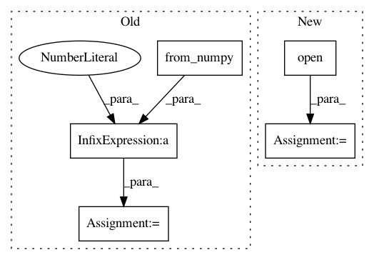

b591a7aecce5b8de42a0dd7bba62780675d34fce,utils/datasets.py,ImageFolder,__getitem__,#ImageFolder#Any#,39
Before Change
// Channels-first
img = np.transpose(img, (2, 0, 1))
// As pytorch tensor
img = torch.from_numpy(img).float() / 255.0
return img_path, img
def __len__(self):
After Change
def __getitem__(self, index):
img_path = self.files[index % len(self.files)]
// Extract image as PyTorch tensor
img = transforms.ToTensor()(Image.open(img_path))
// Pad to square resolution
img, _ = pad_to_square(img, 0)
// Resize
img = resize(img.unsqueeze(0), self.img_size).squeeze(0)
In pattern: SUPERPATTERN
Frequency: 3
Non-data size: 5
Instances
Project Name: eriklindernoren/PyTorch-YOLOv3
Commit Name: b591a7aecce5b8de42a0dd7bba62780675d34fce
Time: 2019-04-30
Author: eriklindernoren@live.se
File Name: utils/datasets.py
Class Name: ImageFolder
Method Name: __getitem__
Project Name: CSAILVision/semantic-segmentation-pytorch
Commit Name: 71c559e66eaff89089fa447a3d7e04b6835356cf
Time: 2019-08-02
Author: zhaohang0124@gmail.com
File Name: dataset.py
Class Name: ValDataset
Method Name: __getitem__
Project Name: eriklindernoren/PyTorch-YOLOv3
Commit Name: 9dcac66250b2d26d9b2505ad04841f3f4b8bc2a1
Time: 2019-04-30
Author: eriklindernoren@live.se
File Name: utils/datasets.py
Class Name: ImageFolder
Method Name: __getitem__